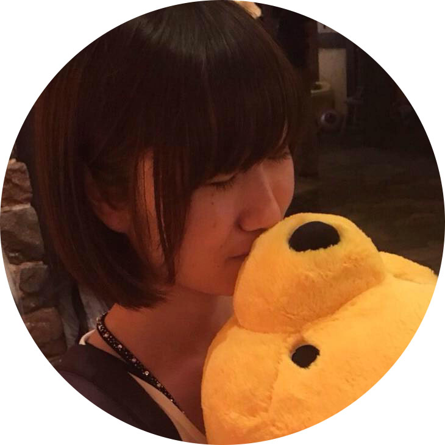

About

谷 優里 / たに ゆり
1995年12月4日生まれ。立命館大学 情報理工学部 情報システム学科 サイバーセキュリティ研究室を卒業後、奈良先端科学技術大学院大学 先端科学技術研究科 情報科学領域へ入学。ユビキタスコンピューティングシステム研究室に所属し、笑顔から生活の質(QoL)を推定するシステムを開発する研究を行っている。技術と人との接点となるUI/UXデザインの役割の重要さとものづくりの面白さに興味をもち、Webデザイナーを目指して日々勉強中。
Skill
Photoshop、HTML、CSS、C言語、Python、Java
Hobby
絵を描くこと(アナログ・デジタル両方描いてます、コピックとペイントツールSAIを愛用しています)
ゲーム(特にスマブラシリーズが好きで、大会に何度か出場したことがあります)
ラーメンを食べること(週1、2ペースで食べてます)